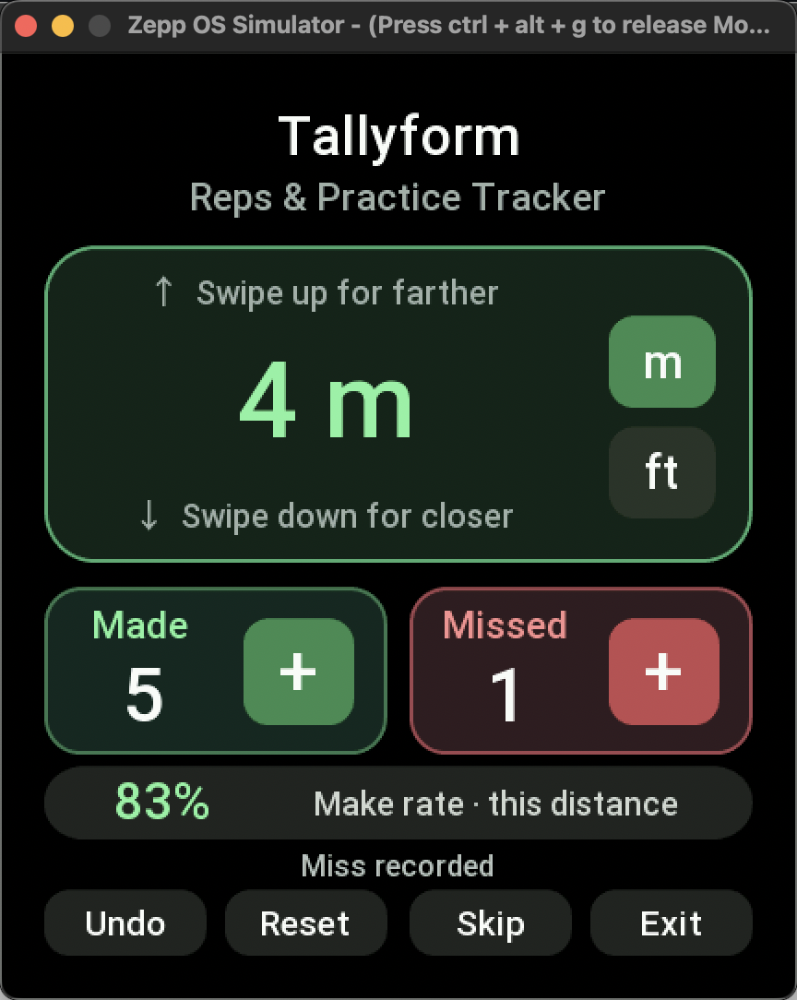

Behind the page
Technical details
The original simulator capture and the illustrative watch artwork serve different purposes. Their source details are available here, separately from the product introduction.
Original app evidence
Simulator capture
This is the unmodified simulator screenshot, not the image-generated watch illustration shown on the home page.


Marketing illustration
Watch artwork
The home-page hero is a single image-generated illustration of an Amazfit Bip Max displaying Tallyform. It uses a simulator capture as its UI reference; it is neither a physical-watch photograph nor unmodified simulator evidence.
The artwork provenance records the generation provider and model, prompt, reference identities, represented app-source fingerprint, canonical display state, image digest, and review decision.